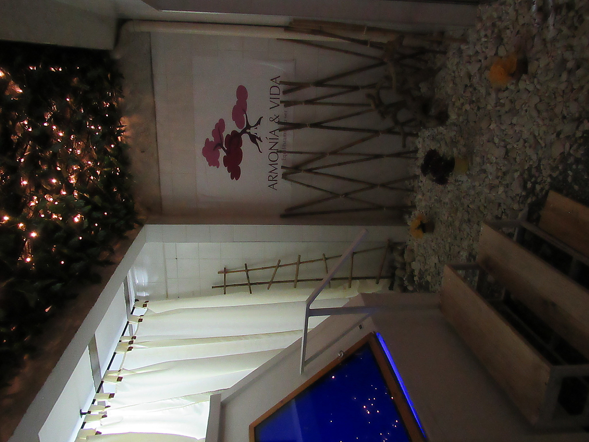

¿Qué es Flotarium?
Es un tanque de privación sensorial que contiene una solución de agua y sulfato de magnesio (sal Epsom) con
una cantidad precisa para crear una densidad similar a la del mar muerto, permitiendo que el cuerpo flote sin
menor esfuerzo y disfrutar de la sensación de ingravidez.
Para aumentar la sensación de tranquilidad y bienestar, nuestro tanque aporta musicoterapia, cromoterapia,
aromaterapia y Ozono.
¿Cómo funciona?
Es un tanque de privación sensorial que contiene una solución de agua y sulfato de magnesio (sal Epsom) con una cantidad precisa para crear una densidad similar a la del mar muerto, permitiendo que el cuerpo flote sin menor esfuerzo y disfrutar de la sensación de ingravidez. Para aumentar la sensación de tranquilidad y bienestar, nuestro tanque aporta musicoterapia, cromoterapia, aromaterapia y Ozono.

¿Cuál es la experiencia??
Nuestro centro terapéutico Armonía y Vida se encuentra ubicado en el sector de la Pradera en Dosquebradas, allí,
hemos construido el primer tanque de privación
sensorial de la región para ofrecerte la experiencia única de Flotarium y sus beneficios.
Agenda tu cita y permítele a tu cuerpo y a tu mente entrar en un estado de relajación profunda para encontrar una
calma duradera, todo esto en una sesión
de 60 minutos en los que flotarás en nuestro tanque de privación sensorial al igual que lo harías en el mar
muerto.
No necesitas traer nada, dispondrás de toallas, champú, gel, tapones para los oídos, secadores y una botella de
agua, todo incluído en nuestro servicio.
Aprenderás de la experiencia de la mano de nuestro personal experto de Armonía y Vida.
Conoce nuestras instalaciones

Conoce nuestras instalaciones
¿Cuáles son los beneficios de la experiencia?
Espirituales
Conecte con usted mismo y con el ahora entrando en un estado de relajación absoluta que le permitirá meditar.
Psicológicos
Ayuda a manejar problemas como la depresión, la ansiedad, tensión nerviosa, insomio, adicciones, reduce el estrés mental.
Biológicos
Acelere curación de lesiones musculares, mejore problemas de reumatismo, migraña, cardiopatía, libere estrés físico.
Agenda tu cita.
¿Quienes somos?
Somos Armonía y Vida, un centro terapéutico ampliamente conocido en la región, que busca orientar y dar solución a los problemas psicológicos y espirituales propios de la sociedad contemporánea.
Comunícate
Armonía y Vida
Cll 20 # 21-30
La Pradera
COL, Ris, Dosquebradas
Cel: (+57) 304 6660170
La Pradera
COL, Ris, Dosquebradas
Cel: (+57) 304 6660170